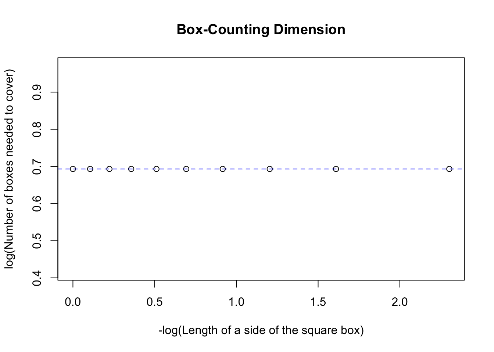
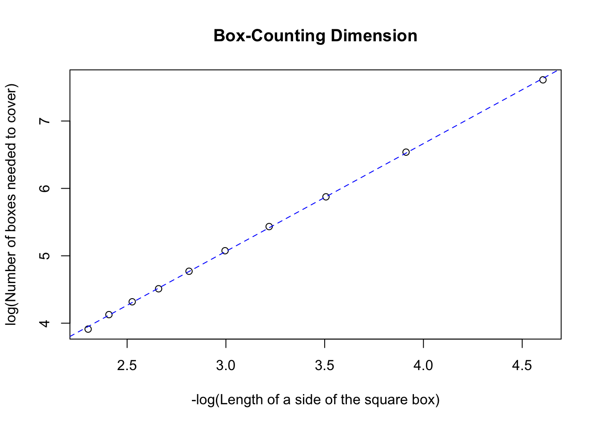
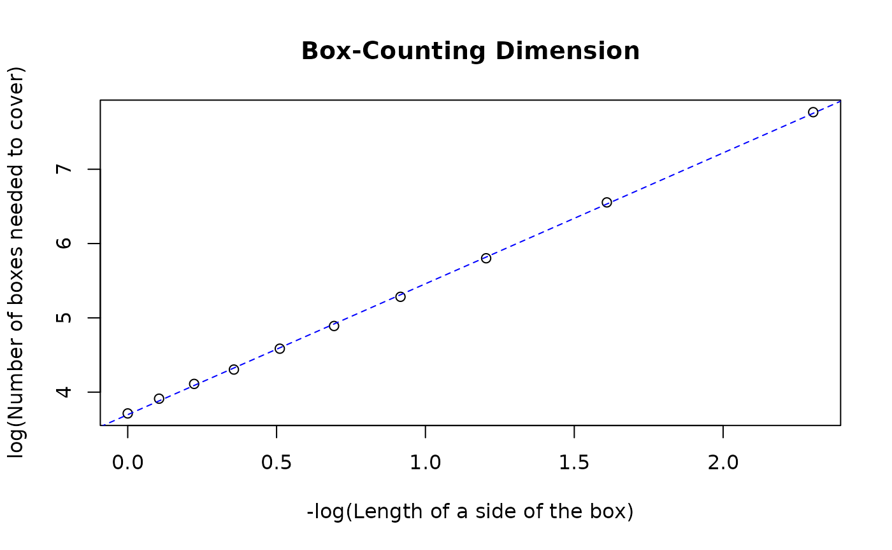

Box-Counting dimension of point datasets
Pramit Ghosh
2024-05-09
Source:vignettes/points.Rmd
points.RmdOverview
This vignette illustrates the use of this package for calculating the
Box-Counting Dimension of point features such as those sf
objects with geometry type MULTIPOINT.
For
sfobjects with geometry typePOINT, a Box-Counting dimension cannot be calculated and is (trivially) equal to 0.
Examples
In the following examples, the Box-Counting Dimension will be
calculated for both arbitrary MULTIPOINT features with
theoretically known fractal dimensions as well as for real-world
datasets.
# Loading pre-requisite packages
library(sf)
#> Linking to GEOS 3.10.2, GDAL 3.4.1, PROJ 8.2.1; sf_use_s2() is TRUE
library(sameSVD)Features with known Box-Counting dimensions
MULTIPOINT feature with 2 points
two_points = st_sf(st_sfc(c(st_point(c(1, 2)), st_point(c(3, 4))), crs = 3857))
two_points
#> Simple feature collection with 1 feature and 0 fields
#> Geometry type: MULTIPOINT
#> Dimension: XY
#> Bounding box: xmin: 1 ymin: 2 xmax: 3 ymax: 4
#> Projected CRS: WGS 84 / Pseudo-Mercator
#> st_sfc.c.st_point.c.1..2....st_point.c.3..4.....crs...3857.
#> 1 MULTIPOINT ((1 2), (3 4))two_points has the following class memberships
class(two_points)
#> [1] "sf" "data.frame"
plot(st_geometry(two_points), axes = TRUE)The Box-Counting dimension of this simple feature can be calculated as follows
bcd(two_points, l = seq(0.1, 1, 0.1), plot = TRUE)
#> Generating grids...
#> Counting intersecting cells...
#> Performing simple linear regression to determine Box-Counting dimension...
#> Plotting requested...
#> Plotting best-fit line...
#> [1] 0The linear regression gives a perfectly horizontal best-fit line indicating a Box-Counting dimension of 0, as expected.
Sierpiński triangle
The Sierpiński triangle is an extensively studied fractal with a theoretically known fractal (Hausdorff) dimension of \(log_2(3) = 1.5850\). In this example, a Sierpiński triangle will be generated using a randomized algorithm and its Box-Counting Dimension will be calculated. The following figure shows how the randomized algorithm works and creates the said fractal using discrete points.

By
Ederporto
- Own work,
CC
BY-SA 4.0,
Link
# Methods to generate a Sierpiński triange
new_points = function(points, last_point, last_vertex = NA)
{
pt_row = sample(1:dim(points)[1], 1)
if(!is.na(last_vertex))
{
while(pt_row == last_vertex)
pt_row = sample(1:dim(points)[1], 1)
}
mid_pt = c((last_point[1] + points[pt_row, 1])/2, (last_point[2] + points[pt_row, 2])/2)
list(matrix(mid_pt, nrow = 1), pt_row)
}The Sierpiński triangle is generated as follows.
# Define initial variables
n = 3 #Create a 3-sided polygon (triangle)
points = matrix(data = c(c(0,0), c(1,0), c(cos(pi/3), sin(pi/3))), ncol = 2, byrow = TRUE, dimnames = list(LETTERS[1:n], c("x", "y"))) #Define vertices of triangle
last_pt = matrix(data = c(0,0), nrow = 1) #Choose a random starting point
max_pts = 20000
# Generate coordinates
sierpinski = list()
length(sierpinski) = max_pts
for(i in 1:max_pts){
last_pt = new_points(points, last_pt)[[1]]
sierpinski[[i]] = last_pt
}
sierpinski_pts = matrix(unlist(sierpinski), ncol = 2, byrow = TRUE)The generated Sierpiński triangle is converted to a sf
MULTIPOINT object with a CRS EPSG:3857.
(sierpinski_sf = st_sf(st_sfc(st_multipoint(sierpinski_pts), crs = 3857)))
#> Simple feature collection with 1 feature and 0 fields
#> Geometry type: MULTIPOINT
#> Dimension: XY
#> Bounding box: xmin: 0 ymin: 0 xmax: 0.9988957 ymax: 0.8647843
#> Projected CRS: WGS 84 / Pseudo-Mercator
#> st_sfc.st_multipoint.sierpinski_pts...crs...3857.
#> 1 MULTIPOINT ((0 0), (0.25 0....
plot(sierpinski_sf, pch = '.', axes = TRUE)The Box-Counting Dimension of this figure is calculated using
bcd() as illustrated below.
bcd(sierpinski_sf, l = seq(0.01, 0.1, 0.01), plot = TRUE)
#> Generating grids...
#> Counting intersecting cells...
#> Performing simple linear regression to determine Box-Counting dimension...
#> Plotting requested...
#> Plotting best-fit line...
#> [1] 1.593836The regression gives a Box-Counting dimension of ~1.59 which is very close to the theoretical value.
Other Fractals
Barnsley fern
Barnsley fern is a well-known fractal that was first described by a British mathematician, Michael Barnsley, in 1993. A Barnsley fern is constructed mathematically using a Iterated function system (IFS), a common method to generate fractals.
In an IFS, a fractal is constructed iteratively as the union of several copies of itself. Before performing the union of the set, self-affine transformations are often applied to the component copies by a function system with finite number of contraction mappings. Formally, the IFS is usually expressed using a Hutchinson operator. Let \(\{f_i\colon X\to X\mid1\le i\le N\}\) be an IFS - i.e. a set of contractions on set \(X\) to itself. Then the operator \(H\) is defined over subsets \(S\subset X\) as \[H(S)=\bigcup\limits_{i=1}^{N}f_i(S)\].
Generating the fern programmatically
The finite set of affine transformations are applied stochastically depending on its influence on the generation of the fern.
barnsley_ifs = function(x, y)
{
xn = 0
yn = 0
r = runif(1)
if(r < 0.01)
{
xn = 0.0
yn = 0.16 * y
} else
if(r < 0.86)
{
xn = 0.85 * x + 0.04 * y
yn = -0.04 * x + 0.85 * y + 1.6
} else
if(r < 0.93)
{
xn = 0.2 * x - 0.26 * y
yn = 0.23 * x + 0.22 * y + 1.6
} else
{
xn = -0.15 * x + 0.28 * y
yn = 0.26 * x + 0.24 * y + 0.44
}
return(c(xn, yn))
}
max_iterations = 20000
fern = list()
fern[[1]] = c(0, 0)
for(i in 1:max_iterations)
{
fern[[i+1]] = barnsley_ifs(fern[[i]][1], fern[[i]][2])
}
fern_pts = matrix(unlist(fern), ncol = 2, byrow = TRUE)
(fern_sf = st_sf(st_sfc(st_multipoint(fern_pts), crs = 3857)))
#> Simple feature collection with 1 feature and 0 fields
#> Geometry type: MULTIPOINT
#> Dimension: XY
#> Bounding box: xmin: -2.181518 ymin: 0 xmax: 2.652911 ymax: 9.998063
#> Projected CRS: WGS 84 / Pseudo-Mercator
#> st_sfc.st_multipoint.fern_pts...crs...3857.
#> 1 MULTIPOINT ((0 0), (0 1.6),...
plot(fern_sf, pch = '.', axes = TRUE, col = "forestgreen")Computing the fractal dimension
The fractal dimension is calculated for the Barnsley fern using
bcd().
bcd(fern_sf, seq(0.1, 1, 0.1), plot = TRUE)
#> Generating grids...
#> Counting intersecting cells...
#> Performing simple linear regression to determine Box-Counting dimension...
#> Plotting requested...
#> Plotting best-fit line...
#> [1] 1.761826